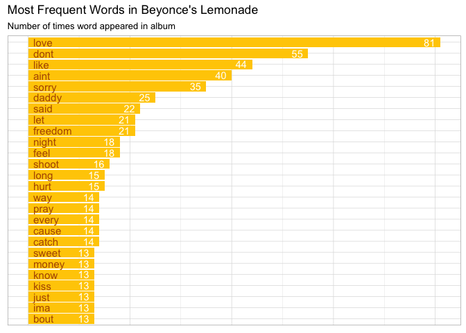
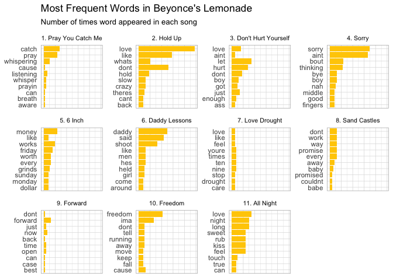
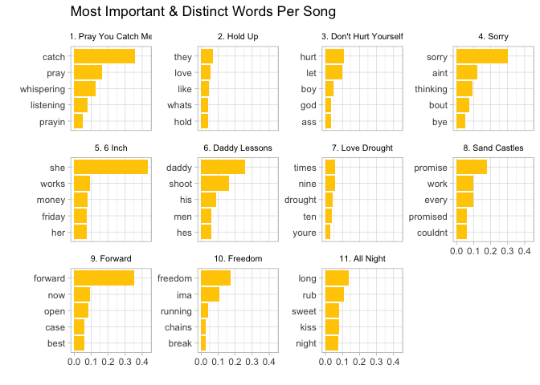
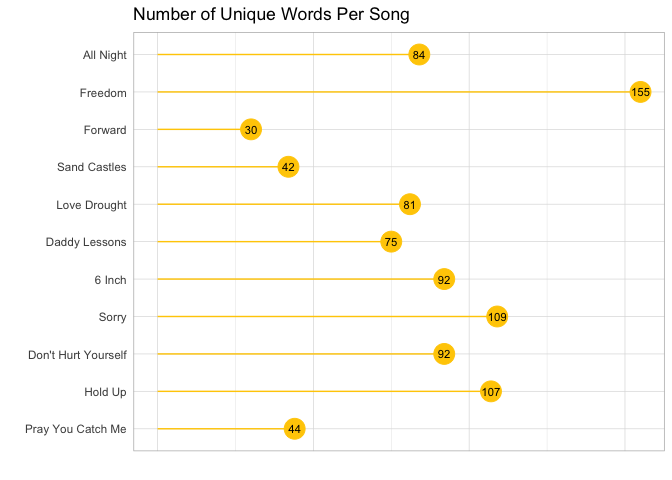
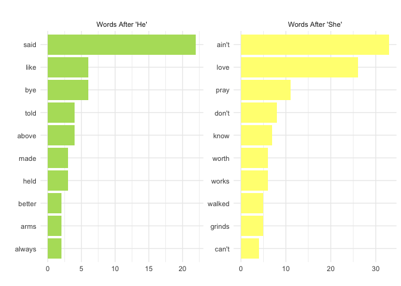
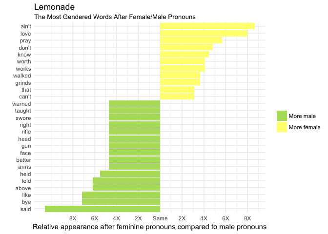
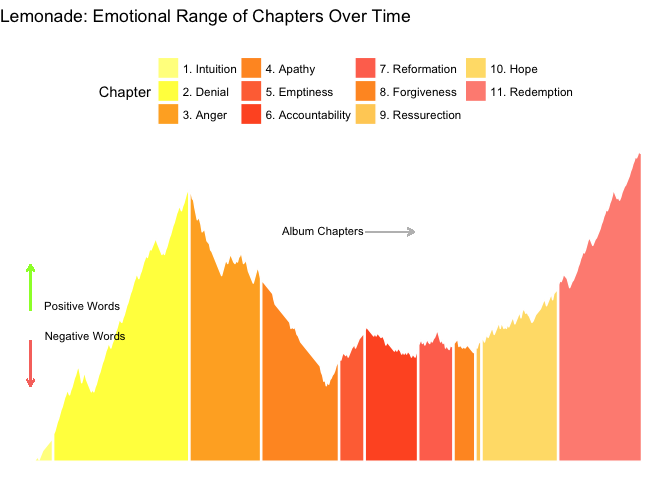
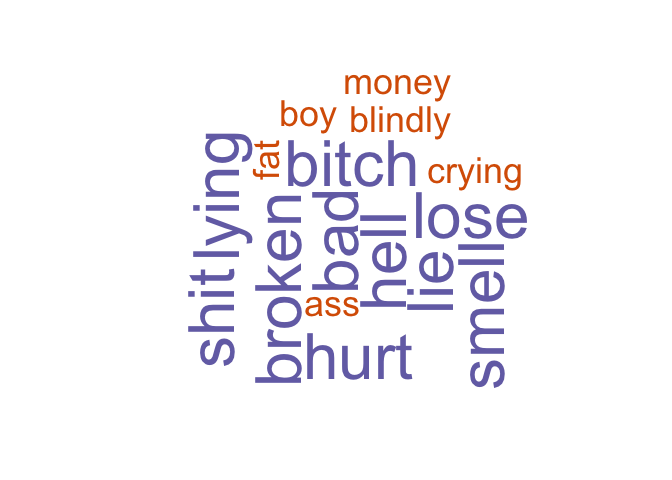

2016 may be long past, but Beyoncé’s vulnerable, emotional, and powerfully feminist album “Lemonade” will inarguably always be relevant. The album is accompanied by an hour-long film broken into twelve songs and eleven “chapters” all weaving together a narrative of heart break, betrayal, loss, black female empowerment and ultimately hope. The following text analysis dives deep into each song’s lyrics per chapter.
To begin, I split each song into all its words and counted the most common ones that came up throughout the entirety of the album. Unsurprisingly, “love” comes up 81 times; many of the lyrics in Beyoncé’s journey reference her relationship with Jay-Z, positively or negatively. Other common words include “sorry,” likely mainly from the song “Sorry” in which she explains repeatedly how NOT sorry she is about Jay Z’s affair, and “feel,” which is certainly fitting given the range of emotions Beyoncé expresses throughout the album.

Next, I split the words up by song to find which lyrics are most popular in each song. Again unsurprisingly, the title of the song is featured in most top 10 lists (i.e. “sorry” in Sorry, “pray” in Pray You Catch Me, “daddy” in Daddy Lessons). But, from the visualizations, we can also see which songs are more repetitive than others. For instance, the songs “Sorry”, “Hold Up” and “All Night” use the top 10 lyrics repeatedly whereas songs like “Forward” and “Love Drought” feature fewer repeated words.

TF-IDF” (term frequency-inverse document frequency) reflects the most important words for each song or album by decreasing the weight of words not seen frequently overall and increasing the weight of words not seen very much in the entire album as a whole. Thus, the following words per song are the most unique or important to that song in relation to the word’s appearance in the album as a whole.
We see some interesting themes come up: it’s now clear that “6 Inch” speaks a lot about women (“she”, “her”) and likely about empowering women (“she”, “works”, “money”). The song “6 Inch” refers to a metaphor for 6-inch heels and seeks to amplify the fierceness and independent power of women. The title “Sand Castles” may not leave us with much, but its most important words “promise,” “work, and ”couldn’t" give us some insight into its overall feeling of being let down or disappointed. In “Sand Castles,” Beyoncé reminisces about her flawed but beautiful relationship with Jay Z. Promises were kept, promises were broken. The EMOTION!

Next, I explored how many words were unique in each song. “Freedom” uses the most unique words, while songs like “Forward” and “Sand Castle” are shorter and more repetitive.

I then used bigrams (two word segments of the lyrics) to understand which words usually came after feminine and male pronouns. Because the words “he” and “she” were rarely used in the album, I extended this analysis to look at words that came after any typical feminine or male pronoun.
The men in Beyoncé’s journey “said” and “told” things and… Beyoncé probably said “boy, bye” to them/him a few times. The women throughout Lemonade “worked” and “grind-ed” and “ain’t” sorry. They “loved” and “prayed” and generally felt and did more than the men.

The below idea was taken from an R-bloggers article on the “Weinsten Effect,” but I adapted it for Lemonade analysis. To understand the magnitude of when these words are used after male or female pronouns, I transformed the bigrams into a log ratio of she/he. Thus, the sign of the log ratio indicates whether the second word appears more after she (positive) or he (negative) and the absolute value of the log ratio indicates the magnitude. Below, we can see which words appear after male pronouns and female pronouns relative to the other gendered word.
Several trends emerge: first, we see that “he” (likely mainly Jay-Z) says, tells, and swears (likely as in “promises”) a lot. Does he stick to his word? There’s also a fair amount of violence associated to the male pronoun. When Beyoncé talks about girls/women, they emote and DO more (with words like “love”, “pray”, “worked”, “grinds”).

Lemonade is EMOTIONAL and raw, no doubt, but do the titles of each Chapter correctly label the emotion at hand? To better understand the true emotional range of Lemonade, I joined the “AFINN” lexicon to the album lyrics, which rates the magnitude of positivity and negativity to each word on a scale of -5 (most negative) to 5 (most positive). I then created a cumulative counter that added each negative or positive score to the previous word’s score. In the end, we can see the emotional (positive vs. negative) flow of the album in its entirety.
Intuition and Denial start us off strong, then the album takes a negative turn when we get to Anger and Apathy. Things remain fairly negative throughout Emptiness, Accountability and Forgiveness, then Resurrection, Hope and ultimately Redemption bring us way back up and let us end on a high note. I would guess that the spurts of positive words within "Emptiness" and "Accountability" are likely words such as “like” or “love” that are actually being talked about in a more sad, negative way.

Lastly, because a sentiment package for “anger” exists in the NRC lexicon, I tested its use against the chapter, “Anger” and built a word cloud. Below indicates the words from the chapter “Anger” that are most associated with anger.

Graphics were created using R, Highcharter and Plotly. Lyrics were found on Genius.com and transferred to text files for analysis. For the purposes of this analysis, the twelfth song, “Formation” was left out due to its lack of assignment to a “chapter.” Code on Github.